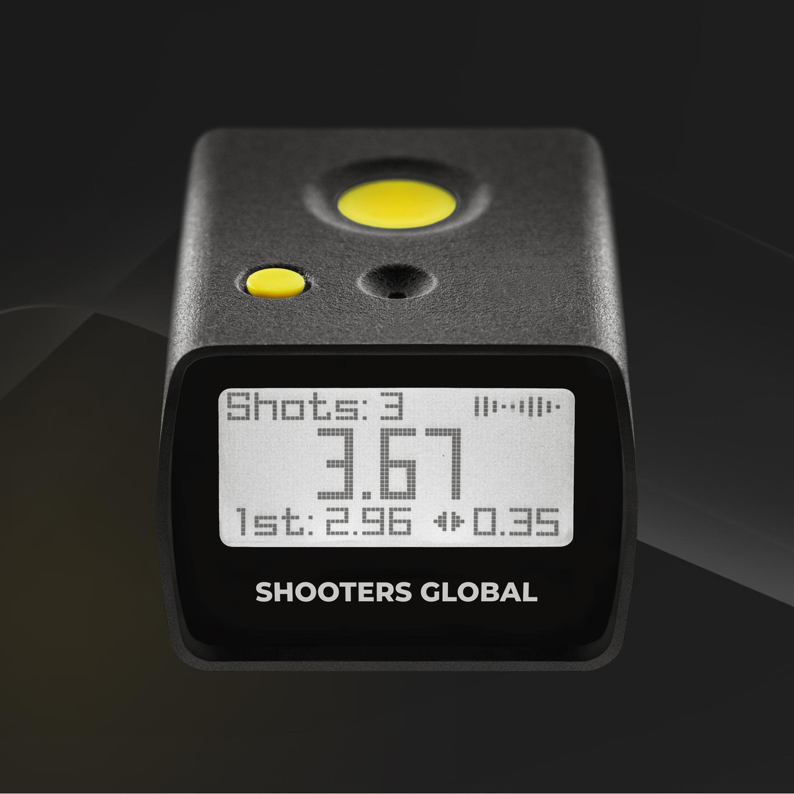

Shooter's Global Shot Timer Integration
Note: the SG Timer integration is a 3rd‑party hardware feature — TriggerTimer is an Apple‑first software product. Most users get full value from iPhone, iPad, Watch, and AirPods; SG Timers are optional for shooters with dedicated hardware.
Trigger Timer talks directly to SG timers over BLE: it streams shots in real time, pushes/pulls PAR setups, and keeps logging offline so every rep is captured even if the link drops.

Features
- BLE pairing & discovery: Scan, pair, and reconnect automatically; see signal and battery status.
- PAR control: Push/pull PAR, start delay, and shot limits from the app—no button fiddling mid-drill.
- Live shot streaming: Real trigger pulls become per-shot timestamps and cadence in your session.
- Offline failover: If BLE drops, the session keeps logging locally and backfills when reconnected.
- Multi-device aware: Connect more than one timer; the session notes which device produced which shots.
- Session archives: Shots + drill context + device metadata, exportable to CSV/JSON for coaches.
Supported Models
Works with Shooter's Global timers that expose BLE shot data (including current SG BLE models such as SG Go). If you have another SG model with BLE, reach out—I’ll verify and add it to the list.
Getting Started
- Turn on the SG timer and open Devices in Trigger Timer.
- Select your timer, confirm PAR settings, and start a drill.
- Shoot—splits stream live. If the link drops, keep shooting; the app keeps timing and backfills when the timer returns.
If BLE drops
- The session continues with local timing so you don’t lose reps.
- Reopen Devices to reconnect; the app syncs shot data and reconciles timestamps.
- Exports include which shots came from SG vs local, so you can audit if needed.